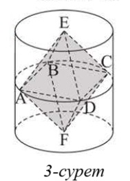

1. 2-суретінде қайсысының табан радиусы 3-ке, жасаушысы 6-ға тең цилиндрдің бүйір беті жазбасының кескіні болатынын көрсетіңіз: Жауап: б)-суретте |
|
2. Бүйір бетінің ауданы табандары аудандарының қосындысына тең цилиндр бар бола ма? Жауабын түсіндіріңіз Жауап: Болады |
|
3. Қабырғалары 6 см-ге және 8 см-ге тең тіктөртбұрышты оның: а) кіші қабырғасынан; ә) үлкен қабырғасынан айналдырғанда шыққан дененің толық бетінің ауданын табыңыз. Жауап: а) 224π см2; ә) 168π см2 |
|
4. Цилиндрдің осьтік қимасының диагоналі \(10\sqrt{2}\) см-ге тең және жасаушымен 45° бұрыш жасайды. Цилиндрдің толық бетінің ауданын табыңыз. Жауап: \(150πcм^2\) |
|
5. Цилиндрдің табанының ауданы π дм²-ге, ал осьтік қимасының ауданы 2 дм²-ге тең. Цилиндрдің толық бетінің ауданын табыңыз. Жауап: 4π дм2 |
|
6. Теңқабырғалы цилиндрдің биіктігі h-қа тең болса, оның толық бетінің ауданын табыңыз. Жауап: \(\frac{3}{2}\)πh2 |
|
7. Теңқабырғалы цилиндрдің толық бетінің ауданы: а) 12π м²-ге; ә) қыры 2 м-ге тең кубтың бетінің ауданына тең болса, оның табанының радиусы қандай болуы керек? Жауап: а) \(\sqrt{2}\) м; ә) \(\frac{2}{\sqrt{π}}\) м |
|
8. Бүйір бетінің ауданы 16π дм²-ге тең теңқабырғалы цилиндрдің толық бетінің ауданын табыңыз. Жауап: 24π дм2 |
|
9. Өлшемдері \(\sqrt{\frac{6}{π}}\) дм және \(\sqrt{\frac{24}{π}}\) дм болатын тіктөртбұрыш – әртүрлі екі цилиндрлің бүйір беттерінің жазбасы. Олардың толық беттері аудандарының айырымын табыңыз. Жауап: \(\frac{9}{π^2}\) дм2 |
|
10. Цилиндрдің: а) бүйір бетінің жазбасы – қабырғасы 1 дм-ге тең шаршы болса; ә) бүйір беті жазбасының диагоналі жасаушымен 60°-қа тең бұрыш жасаса, ал цилиндрдің биіктігі 2 дм-ге тең болса, оның толық бетінің ауданын табыңыз. Жауап: а) (\(\frac{1}{2π}\) + 1) дм2; ә) (\(\frac{6}{π}\) + \(4\sqrt{3}\)) дм2 |
|
11. Цилиндрдің осіне параллель жазықтыпен қимасы оның табанындағы шеңберден 90°-қа тең доғаны қияды. Қиманың диагоналі цилиндрдің 4 см-ге тең радиусынан екі есе үлкен. Цилиндрдің толық бетінің ауданын табыңыз. Жауап: \(32π(1 + \sqrt{2})\) см2 |
|
12.Биіктігі 30 см-ге тең теңқабырғалы цилиндр пішіндес 20 шелек жасау үшін, оның тігісіне бүйір бетінің ауданының 1%-ы кететін болса, 9 м² қаңылтыр жете ме? Жауап: Жетеді |
13. Цилиндрдің бүйір беті ауданының оның осьтік қимасының ауданына қатынасы неге тең? Жауап: \(π\) |
|
14. Цилиндр табанының және осьтік қимасының аудандары, сәйкесінше, Q және S-ке тең болса, оның толық бетінің ауданын табыңыз. Жауап: 2Q + πS |
|
15. Дұрыс үшбұрышты пирамиданың бүйір қыры \(9\sqrt{2}\) см-ге тең және табан жазықтығымен 45° бұрыш жасайды. Осы пирамидаға іштей сызылған теңқабырғалы цилиндрдің биіктігін табыңдар. Жауап: 4,5 см |
|
16. Пирамиданың табаны – қабырғасы а-ға тең дұрыс үшбұрыш. Пирамиданың екі бүйір жағы табанына перпендикуляр, ал үшіншісі онымен α бұрыш жасайды. Пирамидаға биіктігі табанының радиусына тең цилиндр іштей сызылған. Цилиндрдің табанының радиусын табыңыз. Жауап: \(\frac{a\sqrt{3} · tgα}{2(3tgα + 1)}\) |
|
17. Қыры b-ға тең ОАВС дұрыс тетраэдрі мен цилиндр былай орналасқан: тетраэдрдің О төбесі – цилиндрдің бір табанының центрі, ал А, В, С төбелерің оның екінші табанының шеңберінде жатыр. Цилиндрдің толық бетінің ауданын табыңыз. Жауап: \(\frac{2 + 2\sqrt{2}}{3}πb^2\) |
18. Цилиндрдің осьтік қимасының периметрі Р. Егер цилиндрдің бүйір бетінің ауданы ең үлкен болса, оның биіктігі мен табанының радиусын табыңдар. Жауап: h = \(\frac{P}{4}\); R = \(\frac{P}{8}\) |
|
19. Табанының диаметрі d-ға тең цилиндр берілген. Цилиндрдің бүйір бетінің қимасы – эллипс, оның жазықтығы табан жазықтығына 30° бұрышпен көлбеген. Цилиндрдің осы жазықтықпен қимасының ауданын табыңыз. Жауап: \(\frac{πd^2}{2\sqrt{3}}\) |
|
20. Цилиндр мен дұрыс EABCDF октаэдрі былай орналасқан: октаэдрдің E және F төбелері – цилиндр табанының центрлері, ал A, B, C, D төбелері цилиндрдің бетіне тиісті (3-сурет). Егер октаэдрдің қабырғасы а-ға тең болса, цилиндрдің толық бетінің ауданын табыңыз.  Жауап: \(3πa^2\) |